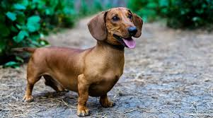

Fun Facts About Dachshunds
Dachshunds may be small, but they have BIG personalities. These little dogs are full of surprises, history, and a lot of attitude.

Personality
- Extremely loyal (they will follow you everywhere)
- Very curious — always investigating something
- Stubborn… sometimes on purpose
- Fearless — they don’t realize how small they are
- Can be protective of their home
Did You Know?
- Dachshunds were bred to hunt badgers underground
- Their long bodies help them move through tunnels
- They have strong claws for digging
- They were used in hunting packs in the past
- Some dachshunds were even used to hunt wild boar
Unique Traits
- Three coat types: smooth, long-haired, and wire-haired
- Two main sizes: miniature and standard
- Very strong sense of smell
- Loud bark for such a small dog
- Love to burrow into blankets and pillows
Funny Behaviors
- They will “dig” into couches and blankets
- They sometimes refuse to move, standing eerily still like a statue
- They act like guard dogs… even at 10 pounds
- They may follow you from room to room all day
Why People Love Them
Dachshunds are bold, funny, and full of personality. Even though they can be stubborn, their loyalty and charm make them one of the most loved dog breeds.